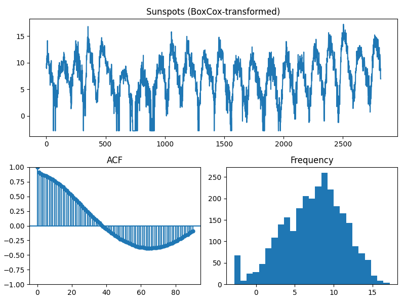

Note
Go to the end to download the full example code.
Displaying key timeseries statistics
Visualizing characteristics of a time series is a key component to effective forecasting. In this example, we’ll look at a very simple method to examine critical statistics of a time series object.
- 
Data shape: 2820
Data head:
Jan 1749 58.0
Feb 1749 62.6
Mar 1749 70.0
Apr 1749 55.7
May 1749 85.0
dtype: float64
/usr/local/lib/python3.9/site-packages/pmdarima-0.0.0-py3.9-linux-x86_64.egg/pmdarima/utils/visualization.py:220: FutureWarning: the 'unbiased' keyword is deprecated, use 'adjusted' instead.
res = tsaplots.plot_acf(
/usr/local/lib/python3.9/site-packages/pmdarima-0.0.0-py3.9-linux-x86_64.egg/pmdarima/utils/visualization.py:220: FutureWarning: the 'unbiased' keyword is deprecated, use 'adjusted' instead.
res = tsaplots.plot_acf(
As evidenced by the more normally distributed values in the transformed series,
using a Box-Cox transformation may prove useful prior to fitting your model.
print(__doc__)
# Author: Taylor Smith <taylor.smith@alkaline-ml.com>
import pmdarima as pm
from pmdarima import datasets
from pmdarima import preprocessing
# We'll use the sunspots dataset for this example
y = datasets.load_sunspots(True)
print("Data shape: {}".format(y.shape[0]))
print("Data head:")
print(y.head())
# Let's look at the series, its ACF plot, and a histogram of its values
pm.tsdisplay(y, lag_max=90, title="Sunspots", show=True)
# Notice that the histogram is very skewed. This is a prime candidate for
# box-cox transformation
y_bc, _ = preprocessing.BoxCoxEndogTransformer(lmbda2=1e-6).fit_transform(y)
pm.tsdisplay(
y_bc, lag_max=90, title="Sunspots (BoxCox-transformed)", show=True)
print("""
As evidenced by the more normally distributed values in the transformed series,
using a Box-Cox transformation may prove useful prior to fitting your model.
""")
Total running time of the script: (0 minutes 0.722 seconds)